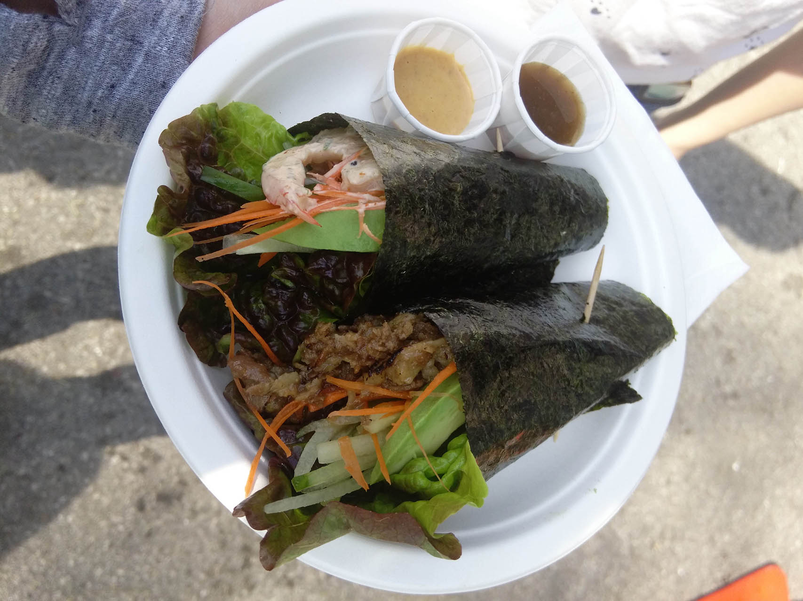

Weekly Recommended

Fried Rice
- Recipe by: Wolf dance
"If there is a taste of food that you can keep in your memory, I think "fried rice" should be considered the one."
- Production time:10-20 minutes
- The number of meals:4 servings
Ingredients
- 200 grams of rice
- 2 tablespoons oil
- 2 eggs
- 2 tablespoons soy sauce
- 1 teaspoons sesame oil
- 1 cup Peas
- 1 carrot
- salt
Directions
- In a saucepan bring water to a boil. Stir in rice. Reduce heat, cover and simmer for 20 minutes.
- Meanwhile, heat oil in a large skillet or wok over medium heat. Add eggs, after 1 minute adds carrot, and peas, to taste. Cook 2 minutes, stirring occasionally.
- Add rice stir-fry for 1 minute. Add soy sauce and cook 1 minute more. Remove from heat. Add sesame oil and mix well.

Temaki Sushi
- Recipe by: Marc
- Production time:10 minutes
- The number of meals:1-4 servings
Ingredients
- Batch sushi rice
- Nori
- Tuna
- Ikura
- Salmon
- Lettuce
- Kaiware sprouts
- Green shiso
- Mayonnaise
Directions
- Place a sheet of nori with the rough-side up in front of you and add a large spoonful of sushi rice on the left half.
- Wet your fingers in water and then use them to spread the rice into an even layer on the left half the nori.
- Place your filling ingredients on the rice, with most of the filling towards the top.
- Roll the bottom left corner up to the middle of the top edge of the nori to form a cone.
- Continue rolling until the nori wraps completely around itself. Eat immediately.